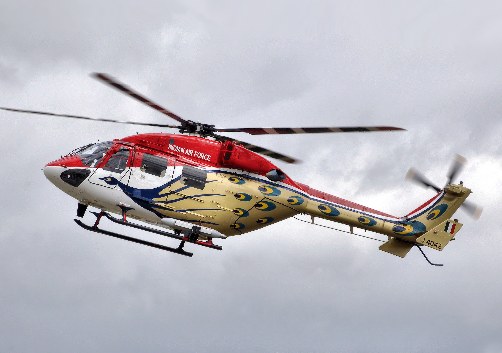
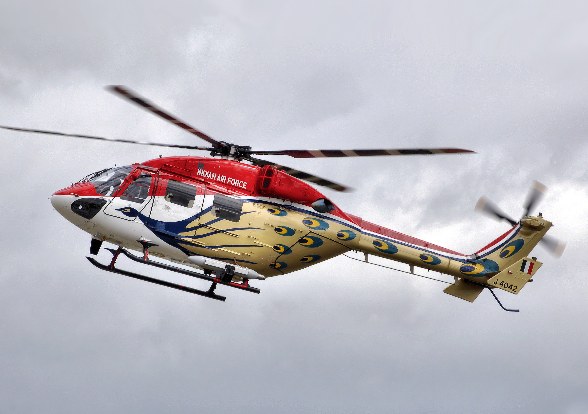

History
The Indian Air Force (IAF) was officially established on 8 October 1932. It played a vital role during World War II and has grown into one of the world's most powerful and technologically advanced air forces.
After independence, the IAF has participated in various conflicts including the Indo-Pak wars of 1947, 1965, and 1971, and the Kargil conflict in 1999.
Achievements
- Successful air strikes during the 1971 Indo-Pak war leading to the creation of Bangladesh.
- Precision strikes during the Kargil War in 1999.
- Operation Safed Sagar: high-altitude combat missions during Kargil.
- Induction of advanced aircraft like Rafale, Sukhoi Su-30MKI, and indigenous Tejas.
- Humanitarian and disaster relief missions, including earthquake and flood relief efforts.
Gallery


 


Aircraft Fleet
The IAF operates a diverse fleet of fighter jets, transport aircraft, helicopters, and trainer aircraft. Some of the notable aircraft include:
- Sukhoi Su-30MKI - Air superiority fighter
- Rafale - Multi-role fighter
- Mirage 2000 - Strike aircraft
- Tejas - Indigenous light combat aircraft
- MiG-21 - Interceptor aircraft
- C-130J Super Hercules - Transport aircraft
- AH-64 Apache - Attack helicopter
- Chinook - Heavy-lift helicopter
Heroes & Gallantry Awards
The IAF has produced numerous brave air warriors who have demonstrated extraordinary courage and skill. Many officers and airmen have been awarded the Param Vir Chakra, Maha Vir Chakra, and Vir Chakra.
- Wing Commander Abhinandan Varthaman - Vir Chakra recipient
- Air Marshal Arjan Singh - Distinguished service
- Squadron Leader Ajay Ahuja - Posthumously awarded Vir Chakra
Training & Institutions
The Indian Air Force trains its personnel at premier institutions like:
- Air Force Academy (Dundigal)
- National Defence Academy (NDA)
- Air Force Technical College
- Flying Instructors School
- Helicopter Training School
Operations & Exercises
The IAF regularly conducts domestic and international exercises to maintain high operational readiness.
- Operation Safed Sagar (Kargil conflict)
- Operation Rahat (Uttarakhand flood relief)
- Exercise Gaganshakti (large-scale readiness drill)
- International joint exercises with USAF, RAF, French Air Force, and more
Contact
Website: indianairforce.nic.in
Follow on social media for latest updates.